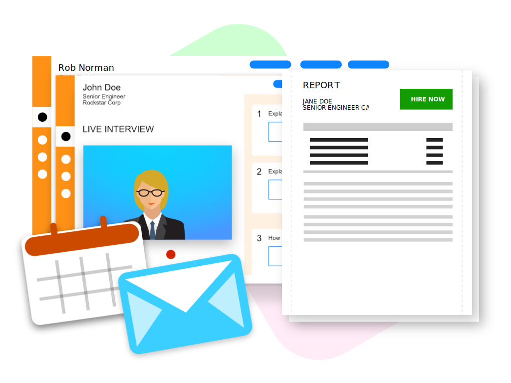

LIVE INTERVIEW PLATFORM
Remote Hiring and Video interviewing gives you the benefit of gauging the person’s reaction to questions and lets you observe their body
language. Moreover, with the help of a suitable and modern Digital Interviewing platform like ours, you can even show images, presentations,
or videos as a problem to solve to the applicant.
Face to face interviews are costly from time spent by both parties as well reimbursement of expenses in case of candidates visiting from
distance. Video Interviewing is a no-brainer alternative here - effective and inexpensive! Additionally, Video Interviews can also help in
record keeping and being more data driven when it comes to candidate’s selection. Turnaround time also improves significantly, given that
arranging for Video Interviews is much more straightforward than in-person interviews. And in the post-pandemic world, it is safer too!
Use FloCareer's exclusive video interview platform to conduct remote interviews for class apart experience.
MAJOR FEATURES
- Interview structure curation
- Auto scheduling with candidate or interviewer choice of preference
- Efficient feedback submission
- Interview resource management i.e. CV, Job Description, Hiring Company write up etc.
- Manage exceptions like lip syncing, fraudulent activities etc.,
- Manager reminders and track your candidates